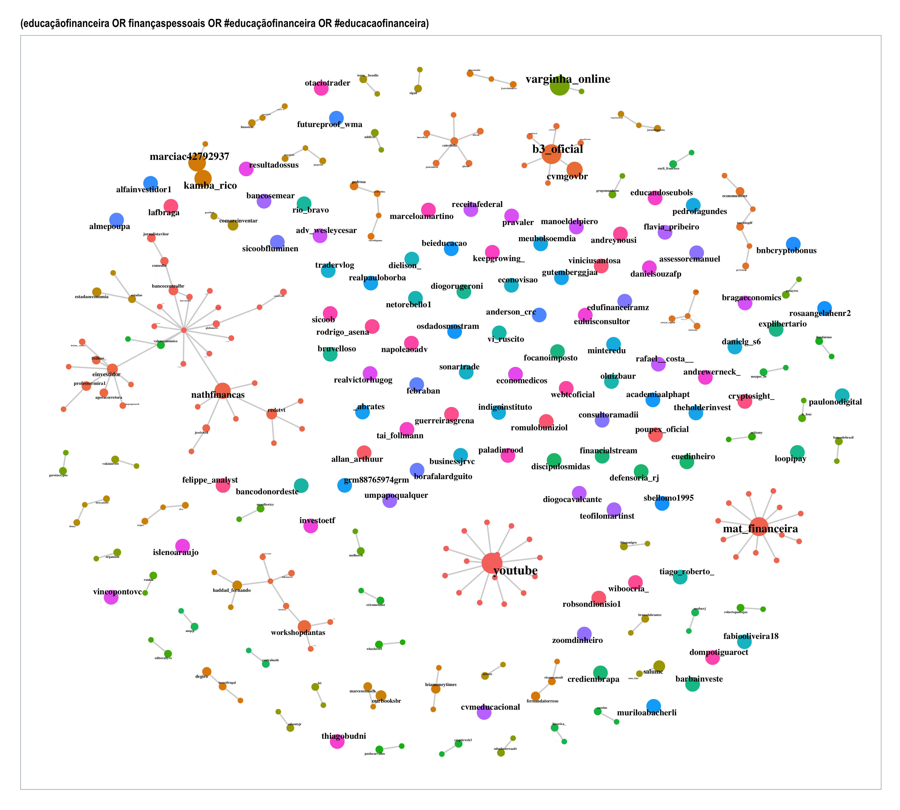

library("dplyr") #for data manipulation
library("igraph") # for social network analysis
library("ggraph")
library(readxl)
library(tidyverse)
library(ggraph)
library(tidygraph)
library(graphlayouts)
library(ggplot2)
library(snahelper)
library(miniCRAN)
library(magrittr)
library(remotes)
library(intergraph)
library(Cairo)
library(ggrepel)
library(here)Análise de Rede Social
Importação das Bases de Dados
Importação do BD
c <- here("BD","EducFin.xlsx")
edges <- read_excel(c,sheet = "Edges", skip = 1)
vertices <- read_excel(c, sheet = "Vertices", skip = 1)
Hashtag <- read_excel(c, sheet = "Overall Metrics", skip = 1)
Hashtag <- toString(Hashtag[30,2])Excluir da tabela os tweets NodeXL
tweets <- edges
tweets <- filter(tweets,tweets$Relationship!="Tweet")
tweets <- filter(tweets,tweets$Language=="pt")Criação da matriz com as arestas
tweets$label <- tolower(tweets$`Vertex 1`)
### Creating a data frame from the sender-receiver objects
rts.df <- tweets %>% select(`Vertex 1`,`Vertex 2`)
colnames(rts.df) <- c("rt.sender","rt.receiver")Ajustes nas tabelas para a criação do Grafo
# Separar as contas que enviaram mensagem
sources <- rts.df %>% distinct(rt.sender) %>% rename(label=rt.sender)
# Separar as contas que receberam mensagem
destination <- rts.df %>% distinct(rt.receiver) %>% rename(label=rt.receiver)
# Criação da Tabela de Nós (Atores), incluindo chave primária para identificação dos nós
nodes <- full_join(sources, destination,by="label")
nodes <- full_join(sources, destination,by="label") %>% mutate(id = 1:nrow(nodes)) %>% select(id,everything())
# Criação da Tabela de Arestas
edges <- rts.df %>% left_join(nodes, by=c("rt.sender" = "label")) %>% rename(from="id")
edges <- edges %>% left_join(nodes,by=c("rt.receiver" = "label")) %>% rename(to=id)
edges <- select(edges,from,to)Criação do Grafo
net.tidy <- tbl_graph(
nodes = nodes, edges = edges, directed = TRUE
)Criação da Tabela com as centralidades
net.tidy <- net.tidy %>%
activate(nodes) %>%
mutate(PageRank = centrality_pagerank())Gráfico de Análise das Centralidades
l= "fr"
set.seed(123)
g <- net.tidy %>%
activate(nodes) %>%
mutate(PageRank = centrality_pagerank()) %>%
mutate(community = as.factor(group_infomap())) %>%
ggraph(layout = l) +
labs(title = Hashtag) +
geom_edge_arc(alpha=.6,edge_width = 0.015,edge_colour = "#A8A8A8", arrow = arrow(angle = 0, length = unit(0.1, "inches"), ends = "last", type = "closed")) +
geom_edge_link(width = 1, colour = "lightgray") +
geom_node_point(aes(colour = community,size=6*PageRank)) +
geom_node_text(aes(label = label,size=1.5*PageRank), colour = "#000000",repel=TRUE,
family = "serif",fontface = "bold") +
scale_size(range = c(0, 15)) +
theme_graph(foreground = 'steelblue', fg_text_colour = 'white') +
theme(legend.position = "none")
g